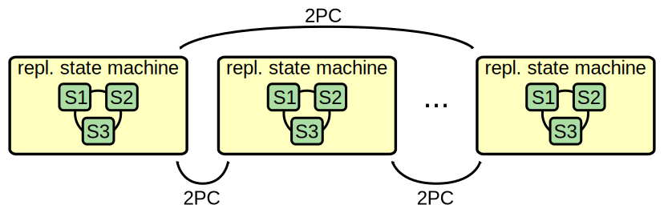
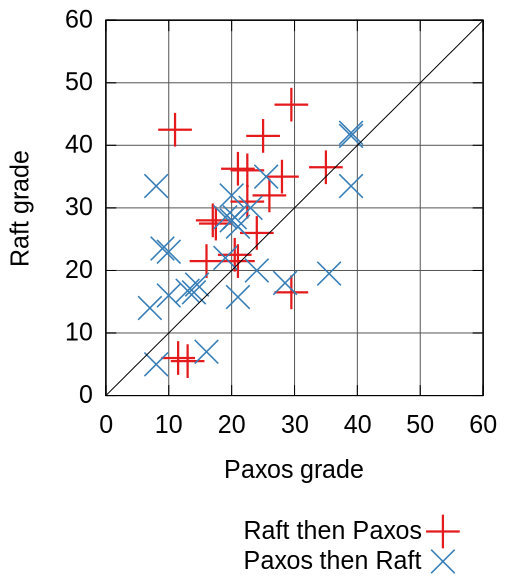
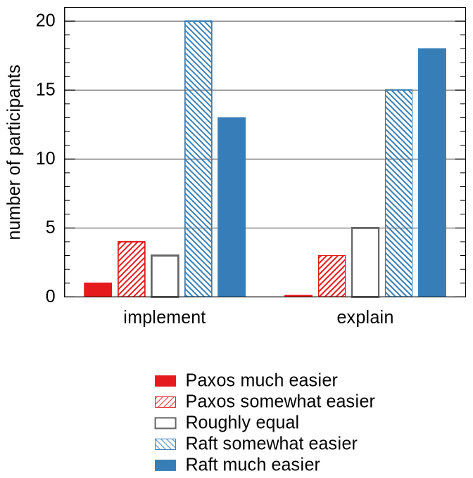

The Raft Consensus Algorithm
Diego Ongaro and John Ousterhout
January 2017
Source code available at https://github.com/ongardie/raft-talk.
Unless otherwise noted, this work is:
© 2012-2017 Diego Ongaro,
© 2012-2014 John Ousterhout.
Licensed under the Creative Commons Attribution 4.0 International License.

Paxos Protocol
- Leslie Lamport, 1989
- Nearly synonymous with consensus
“The dirty little secret of the NSDI community is that at most five people really, truly understand every part of Paxos ;-).”
—NSDI reviewer
“There are significant gaps between the description of the Paxos algorithm and the needs of a real-world system...the final system will be based on an unproven protocol.”
—Chubby authors
How Is Consensus Used?
Top-level system configuration


Replicate entire database state

Raft's Design for Understandability
We wanted an algorithm optimized for building real systems
- Must be correct, complete, and perform well
- Must also be understandable
“What would be easier to understand or explain?”
- Fundamentally different decomposition than Paxos
- Less complexity in state space
- Less mechanism
Raft User Study
 Raft Implementations
| Name | Primary Authors | Language | License |
|---|---|---|---|
| etcd/raft | Xiang Li and Yicheng Qin | Go | Apache 2.0 |
| RethinkDB/clustering | C++ | AGPL | |
| TiKV | Jay, ngaut, siddontang, tiancaiamao. | Rust | Apache2 |
| hashicorp/raft | Armon Dadgar | Go | MPL-2.0 |
| copycat | Jordan Halterman | Java | Apache2 |
| LogCabin | Diego Ongaro | C++ | ISC |
| Kudu | David Alves, Todd Lipcon, Mike Percy | C++ | Apache2 |
| rafter | Andrew Stone | Erlang | Apache2 |
| akka-raft | Konrad Malawski | Scala | Apache2 |
| OpenDaylight | Moiz Raja, Kamal Rameshan, Robert Varga, Tom Pantelis | Java | Eclipse |
| zraft_lib | Gunin Alexander | Erlang | Apache2 |
| willemt/raft | Willem-Hendrik Thiart | C | BSD |
| peterbourgon/raft | Peter Bourgon | Go | Simplified BSD |
| hoverbear/raft | Andrew Hobden, Dan Burkert | Rust | MIT |
| raftos | Alexander Zhebrak | Python | MIT |
| jgroups-raft | Bela Ban | Java | Apache2 |
| ... | ... | ... | ... |
Copied from Raft website, probably stale.
LogCabin
- Started as research platform for Raft at Stanford
- Developed into production system at Scale Computing
- Network service running Raft replicated state machine
- Data model: hierarchical key-value store, kept in memory
- Written in C++ (gcc 4.4's C++0x)